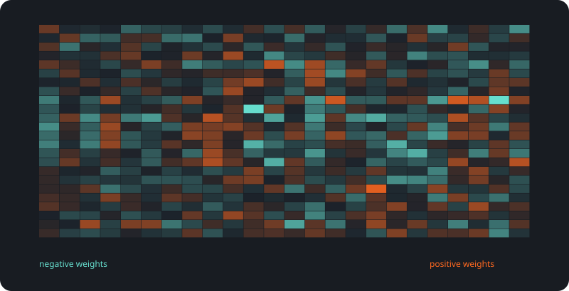
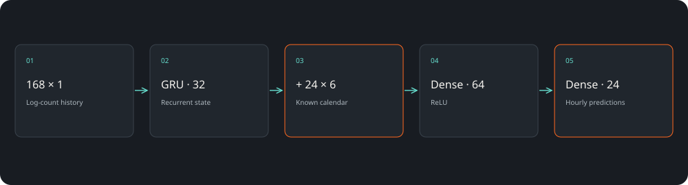
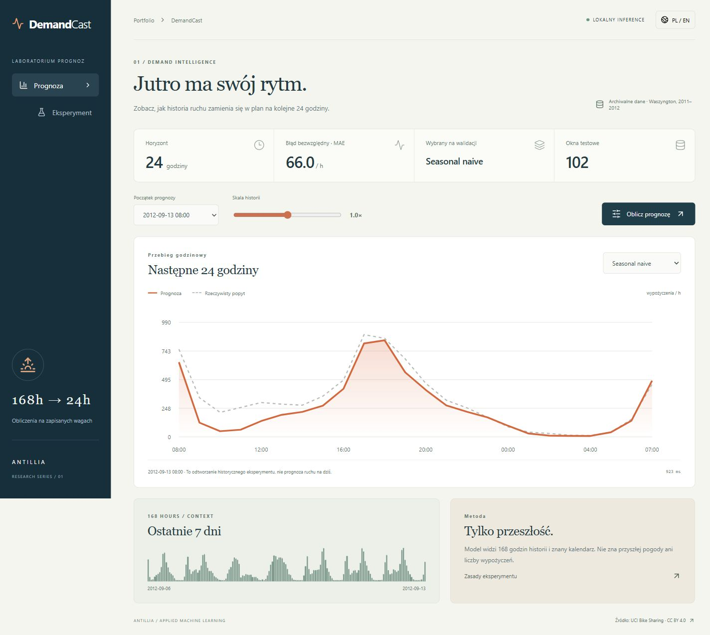

Prognoza na 24 godziny
168 godzin historii, znany kalendarz i trzy porównywane metody.
Prognozowanie popytu / CASE STUDY 01
Zbudowaliśmy laboratorium prognoz, które zamienia siedem dni historii w porównywalne scenariusze na kolejne 24 godziny. Z modelem bazowym, siecią GRU i wynikami, które można odtworzyć.
wypożyczeń / h · MAE
102 okna testowe · 24 h

SAVED ARTIFACTS / REPRODUCIBLE RESULTSSama średnia nie pokazuje porannego szczytu ani spokojnej nocy. Potrzebny jest profil godzinowy, który da się porównać z rzeczywistością i ocenić bez podglądania przyszłości.
168 godzin historii, znany kalendarz i trzy porównywane metody.
Zmiana skali historii pozwala zobaczyć reakcję modeli; scenariusz jest oznaczony osobno od benchmarku.
Zapisane wagi, granice czasowe, predykcje CSV i osobna walidacja.
102 okna testowe · 24 h
MAE ↓
Ta ilustracja została wygenerowana z wag lub reprezentacji używanych w projekcie. Ułatwia rozmowę o architekturze, ale sama nie wyjaśnia każdej decyzji modelu.
React · TypeScript · FastAPI · PyTorch · scikit-learnWybieramy historyczny moment prognozy. System zwraca 24 wartości, pokazuje rzeczywiste obserwacje i umożliwia porównanie metod bez ponownego treningu.

Punkt wyjścia do planowania floty, dyżurów lub obsady na danych konkretnej firmy.
Porównanie rytmu dobowego i tygodniowego przed wyborem bardziej złożonego modelu.
Sprawdzenie, czy dodatkowa złożoność rzeczywiście poprawia wynik.
Dane dotyczą jednego miasta w latach 2011–2012. To odtworzenie eksperymentu, nie prognoza dzisiejszego ruchu. GRU i boosting przegrały z baseline; nie ukrywamy tego wyniku. Przyszła pogoda nie jest wejściem.
UCI Bike Sharing · CC BY 4.0 ↗Projekt demonstracyjny zespołu Antillia. Scenariusze zastosowań opisują możliwości adaptacji; nie są deklaracją wdrożenia u klienta.
Pokaż nam problem. Dobierzemy zakres, dane i sposób sprawdzenia rozwiązania.
Omów swój projekt